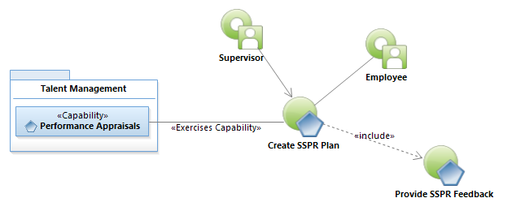
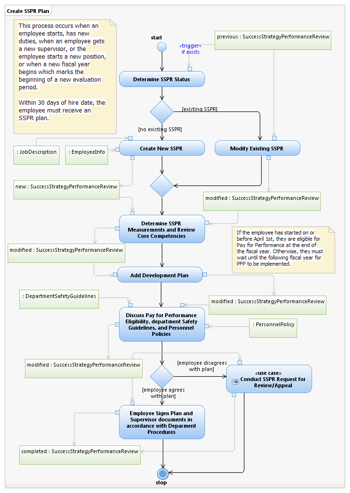

Use Case Model: Create SSPR Plan
Architect: Aaron Brown, IT Enterprise Architect Senior
Date Last Modified: 09/07/2012
User Review: Mike Hockmuller
Date: mm/dd/yyyy
Supervisor completes an SSPR plan document for each qualified employee. The Supervisor and the Employee meet and discuss the plan and sign the document to indicate the meeting took place. The Supervisor documents the meeting.
Follow link to Role Definitions

Use Case Model: Create SSPR Plan
Follow link to Provide SSPR Feedback

Activity Model: Create SSPR Plan